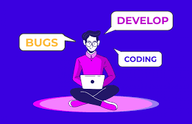

Aprender hablar Inglés

El inglés es una habilidad muy valorada en la programación y la tecnología. El inglés puede ser útil para:
Entender mejor el mundo de los códigos
Acceder a recursos y documentación técnica que solo están disponibles en inglés
Comunicarse con colegas de todo el mundo en proyectos internacionales
Tener una base de usuarios más amplia
Para trabajar como programador en inglés, se recomienda tener un nivel de inglés intermedio alto. Algunos consejos para aprender inglés para programadores son: Obtener una certificación, Escuchar podcasts sobre programación, Leer libros sobre programación en inglés, Unirse a grupos virtuales de habla inglesa, Seguir webs sobre programación.
Aprender Inglés - Consejos
- Verbo to be: El verbo “to be” se utiliza para describir estados y características. Ejemplo: "Soy estudiante".
- Pronombres personales: Los pronombres personales incluyen "yo", "tú", "él", "ella", "ello", "nosotros", "ellos".
- Presente simple: Se utiliza para describir acciones habituales. Ejemplo: "Estudio todos los días"..
- Presente continuo: se utiliza para describir acciones que suceden ahora. Ejemplo: "Estoy estudiando ahora".
- Pasado simple: Se utiliza para describir acciones que sucedieron en el pasado. Ejemplo: "Estudié ayer".
- Los adjetivos en inglés son palabras que modifican a un sustantivo o pronombre para dar información adicional o describirlo. Por ejemplo, en la oración "Tom is a nice guy", el adjetivo "nice" describe al sustantivo "guy"
- Los colores y sus códigos ASCII, y practicas de actividades de traducción
- Los Números, practicas de actividades de traducción